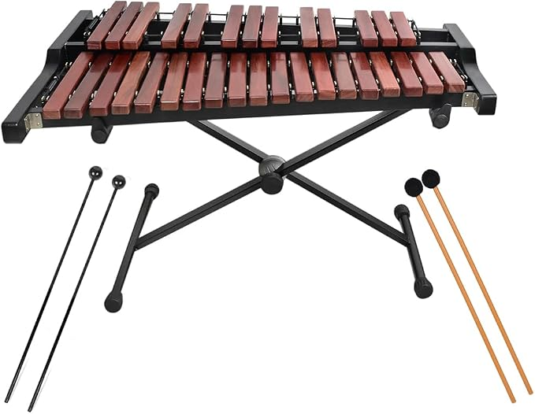

Xylophone

The xylophone is a percussion instrument made of wooden or synthetic bars, known for its bright, crisp and cheerful sound. Played with mallets, it adds sparkle and clarity to orchestras, concert bands, classrooms and solo performances.
Types of Xylophones
Concert Xylophone
A large, professional instrument with rosewood or synthetic bars and tuned resonators. It produces a sharp, projecting tone and is used in orchestras and concert bands.
- Price range: from $1,500 to $10,000+
Student Xylophone
A more compact instrument with a smaller range, made for school bands and developing players. It offers a clear tone and durable construction at a lower price.
- Price range: from $200 to $1,500
Classroom Xylophone
A set of removable bars on a resonant frame, designed for music lessons and group play. It is easy to learn on and helps students understand pitch and rhythm.
- Price range: from $150 to $1,200
Children's Xylophone
A small, colourful xylophone with a simple layout and a light, playful sound. It is perfect for young beginners discovering music.
- Price range: from $15 to $100
Popular Brands
- Yamaha
- Adams
- Pearl
- Musser
- Studio 49